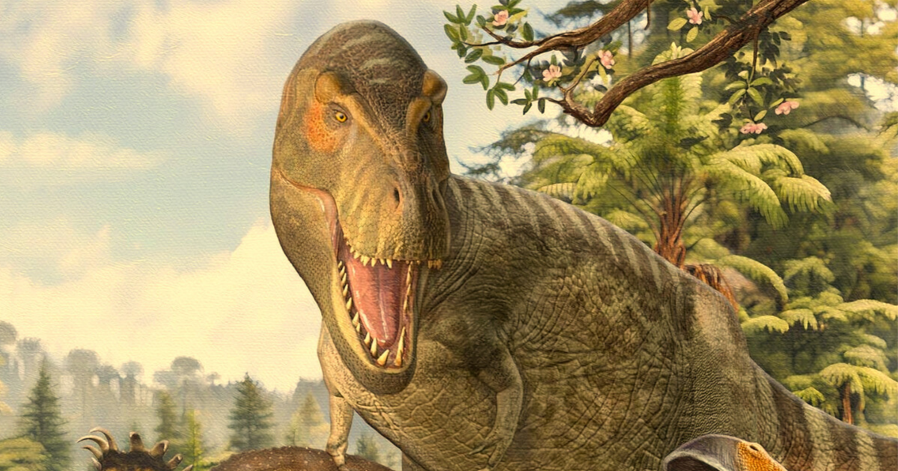

<!DOCTYPE html>
<html>
<head>
    <title>Tyrannosaurus rex - The Paleojournal</title>
    <link rel="stylesheet" href="styles.css">
    <link rel="icon" href="spino.ico" type="image/x-icon">
</html>
<body>
    <h1><i>Tyrannosaurus rex</i></h1>
    <hr style="height: 1px; background-color: black; border: none; width: 600px;">
    <center>
        
    </center>
    <hr style="height: 1px; background-color: black; border: none; width: 600px;">
    <center>
        <h2 style="font-family: 'Courier New', Courier, monospace;">About:</h2>
    </center>
    <center>
        <p style="font-family: 'Courier New', Courier, monospace; font-size: large;"><i>Tyrannosaurus rex</i>, one of the most recognizable dinosaurs, was a large<br>tyrannosaurid theropod that lived during the Maastrichtian age of the Cretaceous<br>era. An adult <i>T. rex</i> could weigh between 11,000-15,000 pounds (5,000-7,000 kg),<br>making it the largest known terrestrial carnivore of all time in terms of<br>weight, with <i>S. aegyptiacus</i> being larger in terms of length and height. The<br>largest <i>T. rex</i> specimen that we know of is Scotty, coming in at around 19,555<br>pounds (8,870 kg).</p>
    </center>
    <hr style="height: 1px; background-color: black; border: none; width: 600px;">
    <center>
        <h2 style="font-family: 'Courier New', Courier, monospace;">Stats:</h2>
    </center>
    <center>
        <p><table border="1px" style="font-family: 'Courier New', Courier, monospace;">
            <tr>
                <td>Weight: 5-8 tons (~11,000-15,000 lbs)</td>
            </tr>
            <tr>
                <td>Diet: Large herbivores, any available food</td>
            </tr>
            <tr>
                <td>Location: Wyoming, USA (Hell Creek Formation)</td>
            </tr>
            <tr>
                <td>Lived with: <i>E. regalis, T. horridus, A. magniventris</i></td>
            </tr>
        </table></p>
    </center>
    <hr style="height: 1px; background-color: black; border: none; width: 600px; margin-top: 30px;">
    <center>
        <h2 style="font-family: 'Courier New', Courier, monospace;">Fossils:</h2>
    </center>
    <center>
        <p style="font-family: 'Courier New', Courier, monospace; font-size: large;">The first <i>T. rex</i> fossils were discovered in 1900 by paleontologist and assistant<br>curator of the American Museum of Natural History Barnum Brown in eastern<br>Wyoming. He found another partial skeleton in Montana in 1902. Henry Fairfield<br>Osborn named the second skeleton <i>T. rex</i> in 1905. He named the other one<br><i>Dynamosaurus imperiosus</i> the same year, but in 1906, he recognized that the two<br>skeletons were the same, and changed the name of the first one to match the<br>second. <i>Dynamosaurus</i> was later honored in 2018, when <i>Dynamoterror dynastes</i> was<br>described.</p>
    </center>
</body>
</html>